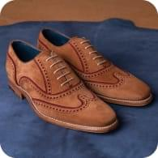
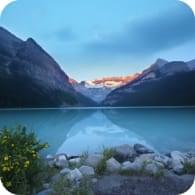
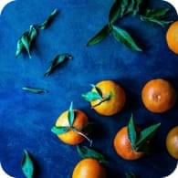
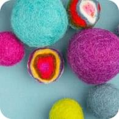

Как ухаживать за обувью из кожи

Неизведанные места озера Байкал
Можно ли приручить дикую лису?
Лучшие модели ноутбуков для фриланса

10 необычных блюд из мандаринов
Люди, изменившие digital индустрию
Современные программы для дизайнера
Самый неприхотливые домашние растения
Как вырастить герберу в домашних условиях
Идеи для современного интерьера
Как ухаживать за обувью из кожи

Необычная пряжа
1
2
3